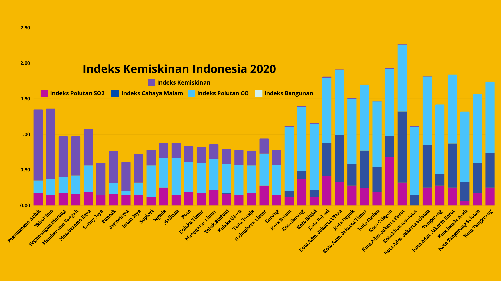

Indeks Kemiskinan 2020

Model kemiskinan berhasil dibangun dengan melibatkan data penginderaan jauh yaitu indeks polutan sulfur dioksida (SO2), karbon monoksida (CO), volume bangunan, dan intensitas cahaya malam. Secara spasial, tingkat kemiskinan tertinggi pada tahun 2020 dominan ditemukan pada Indonesia Timur terutama Pulau Papua.
Pembangunan model Kemiskinan Indonesia menggunakan metode principal component analysis (PCA) dalam proses pembobotan. Pada tahun 2020, diperoleh Kabupaten Pegunungan Arfak (Provinsi Papua Barat) dan Kabupaten Yahukimo (Provinsi Papua Pegunungan) dengan indeks kemiskinan tertinggi.
